The earlier package over-weighted chemical and biological language. This report replaces that reading. The source corpus is treated primarily as a topological and information-architectural design record whose mature center is a queryable state-and-event substrate. Chemical, biological, optical, artistic, political, and hardware passages are retained only where they instantiate, motivate, or test the shared operator vocabulary.
Do not judge the archive as a proposal about rasterization, raymarching, voxel storage, or a conventional frame loop. Those are downstream projection tools. The authoritative object is an ontology of directly queryable relations, events, phases, identities, and transitions. [S1 p. 1]
This report remains intentionally internal to the supplied corpus. It does not externally verify performance, historical anecdotes, biological mechanisms, hardware efficiency, or topological physics. Where the report introduces information-science language such as event sourcing, materialized views, schema, provenance, or query planning, it labels that language as a cross-domain correspondence rather than a verbatim source claim.
The corrected reading is not "hidden chemistry." It is a cross-domain corpus attempting to describe a common computational substrate beneath geometry, sensing, graphics, simulation, identity, memory, and optional photonic hardware. Its strongest form is a spherical-support event calculus: a finite grammar generates a continuous state manifold; local radial-angular supports select relevance; compatibility determines whether co-located sectors can interact; explicit relation surfaces define events; typed transitions update state while preserving invariants and lineage; images are optional outputs. [S1 pp. 1, 5-7]
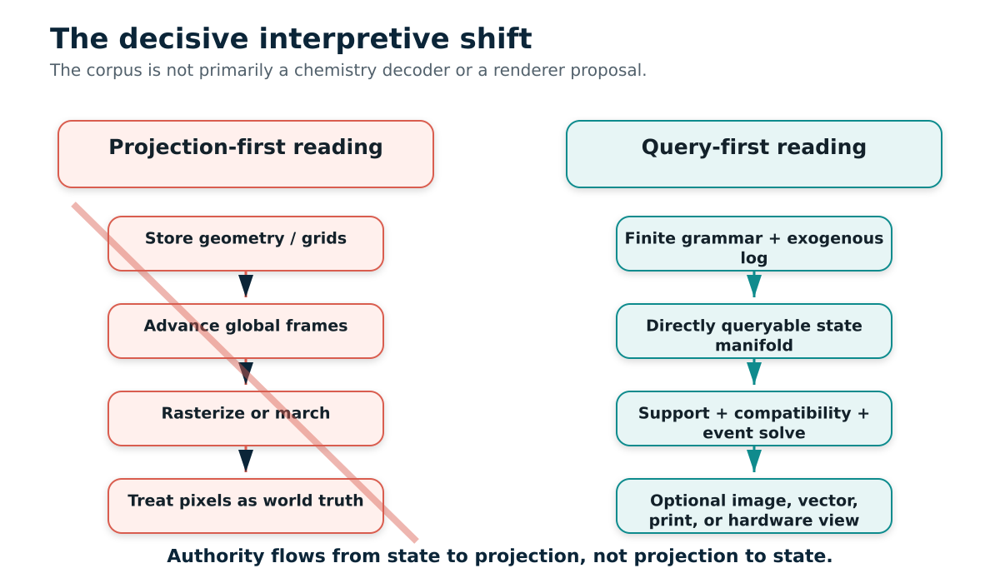
A state manifold and relation algebra, not a framebuffer, mesh inventory, or global voxel grid.
Sheets, parity, gluing, overlap, and pinch points organize coupling and transition semantics.
Raster, ray, vector, display, and print pipelines are materialized views downstream of a query result.
Grammar, exogenous log, lineage, branch, address, and compatibility form a compact data architecture.
Equation World Zero tests six headless queries over a deliberately restricted relation family.
Hollowlens-0 is an optional bounded optofluidic implementation, not proof of the whole ontology.
The corpus is internally coherent and prototype-worthy when restricted to controlled relation families, headless state/event queries, explicit compatibility, finite grammar depth, and testable lineage. As a universal replacement for graphics, simulation, memory, cognition, and semantics at once, it remains unproven. [S1 pp. 1, 7-12]
The report uses a layered authority model. S1 supplies the mature interpretive rule. Earlier files contribute generative vocabulary, examples, and constraints. S6 supplies the most disciplined physical translation. S7 is treated as a graphics projection adapter. Where sources conflict, later normalization controls unless the report explicitly preserves the conflict as an unresolved design choice.
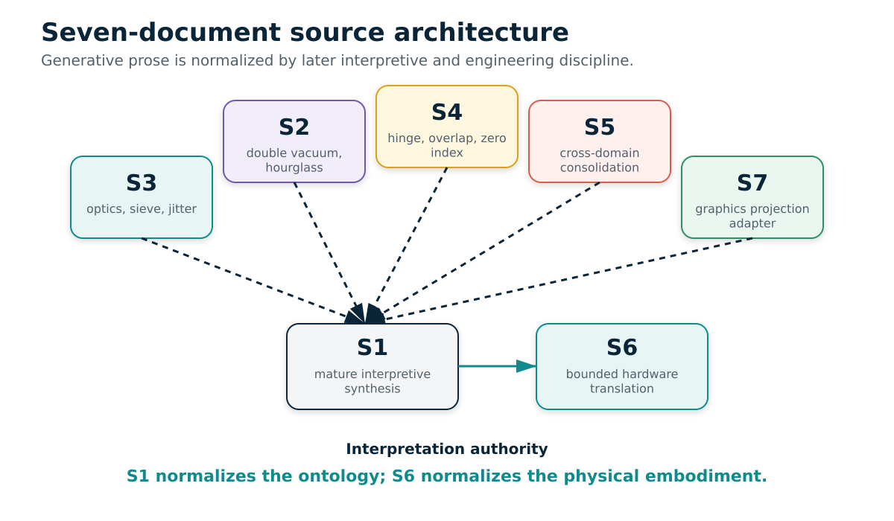
| Label | Meaning in this report |
|---|---|
| canonical | Explicitly supported by the mature interpretive synthesis or bounded engineering source. |
| normalized operator | A recurring source motif translated into a testable computational role. |
| decoder inference | An information-science or graphics correspondence added by this report and marked as such. |
| bounded hypothesis | A source proposal retained only as an experiment with exit criteria. |
| rejected totalizing claim | A claim the source itself later narrows or the bounded report explicitly rejects. |
Equations in this report are either reproduced from the mature formal core, presented as normalized notation, or explicitly labeled as a prototype restriction. Missing source equations are not silently invented. The supplied texts are design records; this package does not convert metaphor into empirical fact.
The technical core excludes personal, political, punitive, medical, and bodily-control narratives as proof of a computational architecture. It also excludes chemical structures as a primary decoding target. Those passages remain in the source extracts for provenance, but they do not govern the cross-domain model. [S1 pp. 11-12; S6 p. 10]
The archive stabilizes by correction rather than by a single clean specification. Early optical and shader language supplies apertures, cones, polar charts, and sensory filters. Middle documents introduce parity, zero-crossings, folds, and persistent anchors. Hollowland expands these into phase sheets, a quad hourglass, gluing, and direct event solving. ADDominUS consolidates identity, memory, relation algebra, and hardware prompts. The chronological synthesis then changes the reading rule, and the spherical-throughput report bounds the physical implementation.
| ID | Document | Role | Status |
|---|---|---|---|
| S1 | Chronological Synthesis of the Spherical Substrate Line(3).pdf | Mature interpretive synthesis and feasibility discipline | canonical interpretive authority |
| S2 | hollowland-double-vacuum(7).pdf | Generative topology and CS vocabulary: double vacuum, SDF zero, phase, parity, hourglass, eigenspace | exploratory and metaphor-heavy |
| S3 | dmt-spirit-molecule-(leeuwenhoek-animalcules-peter-the-great-netherlands-signify-phillips-netherlands) (1).pdf | Optical/perceptual origin motifs: aperture, inversion, polar LUTs, sensory sieves, jitter, reflection | exploratory cross-domain narrative |
| S4 | 21BenBurgersStrikesBackTelNetNiet.pdf | Zero-index, hinge, phi/D-fold, overlap and shared-domain motifs | geometric/typographic brainstorming |
| S5 | ADDominUS(1).pdf | Cross-domain consolidation: relation algebra, identity, memory, compatibility, hardware prompts | mixed synthesis with speculative claims |
| S6 | Spherical_Throughput_Practical_Waveguide_Liquid_Substrate_Lensing(sqwit (super quick wit).pdf | Bounded engineering translation, B.C.E. metrics, Hollowlens-0, failure criteria | bounded implementation guide |
| S7 | KC Vector Graphical Art System.pdf | Downstream computer-graphics projection adapter: log-polar SDF, 1-bit modulation, jitter and prepress | projection-layer proposal |
The important chronological movement is from display vocabulary to local sensing, and from local sensing to a general event calculus. "Sphere" ceases to mean a global replacement coordinate system and becomes a local chart for support, shelling, orientation, and radial reach. "SDF zero" ceases to mean an invitation to keep sampling and becomes the event locus. "One bit" ceases to describe the world and becomes a narrow routing bit. "Double vacuum" ceases to describe emptiness and becomes the absence of coupling. [S1 pp. 2-7]
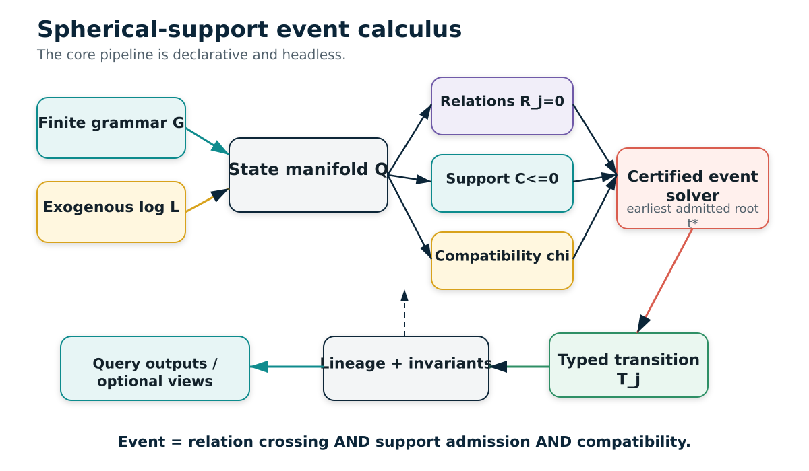
The source vocabulary is intentionally overloaded. The same word may refer to geometry, optics, phase, computation, identity, or metaphor. A useful report therefore cannot merely collect nouns. It must assign each noun a type, scope, input, output, and status. The following normalization table is the center of that conversion.
| Source motif | Normalized operator | Disposition | Source basis |
|---|---|---|---|
| sphere / spherical | local radial-angular support, shelling, orientation, radial reach | retain and narrow | [S1 pp.1,5-7] |
| cone / lighthouse | analytic support or relevance operator over state/query domain | retain and normalize | [S1 pp.5-7,10; S2 pp.18-19] |
| SDF=0 / B=0 | explicit event or transition guard surface | retain as core | [S1 p.7; S2 pp.16-19] |
| double vacuum | same coordinate but incompatible sector; absence of coupling | retain as core | [S1 p.6; S5 pp.32-33] |
| one bit | parity, route, validity, or admission bit with declared schema | retain narrowly | [S1 pp.5-6; S6 p.7] |
| quad hourglass | four-sector routing partition with central event locus | retain as visualization | [S1 p.6; S2 pp.23-25] |
| Klein bottle | quotient/gluing/orientation map; explicit ports and transfer required | demote literal hardware | [S1 p.6; S6 pp.2,5,10] |
| Mobius strip | optional local orientation/inversion motif | metaphorical/optional | [S3 pp.5-10] |
| phi | split into angular coordinate, phase law, or heuristic schedule | disambiguate | [S2 pp.14-19; S5 pp.1-3] |
| golden ratio | optional schedule or aesthetic motif only | reject as requirement | [S2 pp.14-19; S4 pp.10-12] |
| sieve | sensor transfer, filter, candidate reduction, or materialized index | retain with caution | [S3 pp.11-15; S5 pp.13-16] |
| jitter / wiggle | controlled sampling/dither/micro-shift operator | retain layer-specifically | [S3 pp.13-15; S7 pp.4-10] |
| Feynman vectors | phase-amplitude edge accumulator (source term is not formally derived) | rename for clarity | [S7 pp.1-3] |
| matrix-in-glass | calibrated passive or tunable optical transfer matrix | bounded translation | [S6 pp.2,4-5] |
| liquid substrate | packaged liquid lens/overclad/core tuning focus, n_eff, phase, coupling | bounded translation | [S6 pp.3-5,8-9] |
| zero latency / heat / memory | not accepted; include end-to-end costs and stored novelty | reject | [S6 pp.2,10] |
| universal O(1) | only horizon-independent evaluation for fixed closed expressions may be tested | reject totalizing form | [S1 p.8] |
| chemical/biological literalization | cross-domain analogy or unsupported application unless a separate model is specified | exclude from core | [S1 pp.11-12; S6 p.10] |
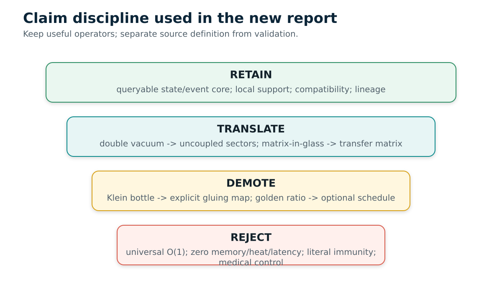
Optical field is governed by the optical model; liquid interface by fluid and surface mechanics; guided amplitudes by coupled-mode theory; event declaration by compatibility and guard logic. Topological language cannot substitute for the equations of a physical layer. [S6 pp. 2, 5]
The corpus becomes technically legible when its operators are typed as state, relation, support, compatibility, event, transition, identity, and projection.
The central inversion is a change in the question asked by the system. A conventional scene pipeline asks what geometry is stored, what must update this frame, and how a sensor produces an image. The equation-world asks which finite relations generate possible states, what state holds at a requested time, which event occurs next, and which sectors are allowed to couple. That is a shift from picture production to direct state semantics. [S1 pp. 9-10]
q_e(t) at requested time t?This does not ban graphics. It relocates graphics. A projection may be raster, ray-based, vector, volumetric, print, sensor, or photonic. None of those output forms is allowed to overwrite the authority of the state manifold.
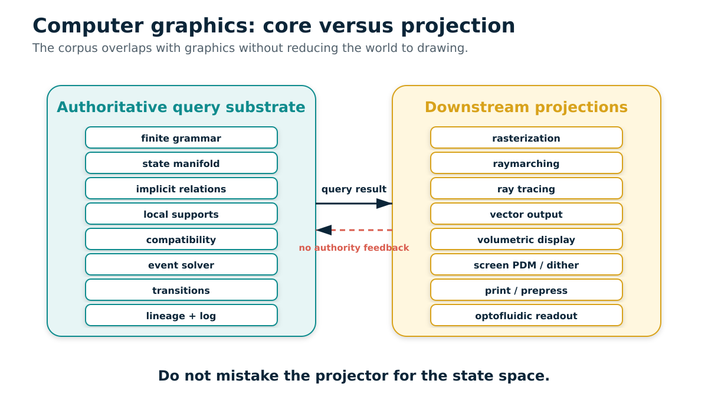
The mature formal condensation treats state as a product space. Position is only one coordinate family. Time, phase, sheet, lineage address, and branch are independent dimensions of the computational state. This is the formal reason that co-location does not force interaction and that identity does not collapse into a current coordinate. [S1 pp. 5-6]
Q = P^n x R_time x S^1_phase x Z2_sheet x A_address x B_branchq_e(t) = (x_e(t), t, phi_e(t), sigma_e(t), a_e, b_e, p_e)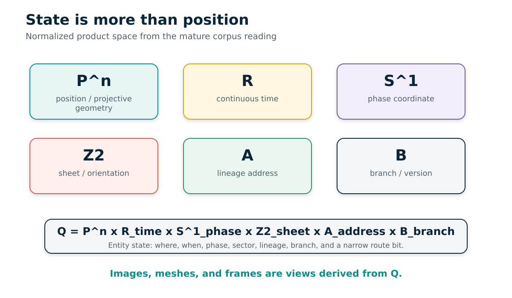
W = (G, R, T, I), with an external novelty log LG: finite grammar or generative program.R: relation and guard family.T: typed transition rules.I: invariants that must survive designated transitions.L: exogenous log for shocks, interventions, or novelty not implied by the closed grammar.The corpus repeatedly insists that identity is not exhausted by a snapshot. The normalized information-science form is a lineage address derived from seed, grammar path, and invariant history. The hash form below is a prototype representation, not a source-mandated cryptographic standard.
a_e = H(seed_e, grammar_path_e, lineage_history_e)Person(t) != Snapshot(t) is best read as an architectural caution: current position, role, image, or record is a projection of identity, not the full identity. [S5 pp. 6-9]
A pure geometric intersection is insufficient. The source formal core requires three conditions: the relation or guard reaches its event surface; the state lies within a declared local support; and the compatibility predicate admits coupling. Only then is the transition invoked. [S1 pp. 5-7; S6 pp. 3, 5, 7]
R_j(q; theta_j) = 0C_alpha(q,t) <= 0chi(e,j,t,context) in {0,1}t* = min { t >= t0 : R_j(q_e(t)) = 0 AND C_alpha(q_e(t),t) <= 0 AND chi(e,j,t) = 1 }q_e(t*+) = T_j(q_e(t*-), context)Earlier passages sometimes imagine "going past zero" in a continuous field as if that alone escaped rasterization. The mature synthesis corrects this: the zero set is not a magical continuation surface. It is the explicit locus where event semantics are invoked. The engine solves for a root or certified interval and then applies a transition. If it merely samples the field again and again, hidden marching has returned. [S1 p. 7; S2 pp. 16-19; S3 pp. 30-33]
Event {
event_id, entity_id, relation_id, transition_id,
t_star, support_admitted, compatible, predicate_version,
guard_crossed, root_multiplicity, confidence,
pre_state_hash, post_state_hash,
lineage_parent, branch_created,
parity_before, parity_after,
invariant_report
}The event record makes the architecture auditable. A result is not merely "a hit"; it carries the support, predicate version, guard, uncertainty, lineage, and transition outcome that justified it.
Double vacuum is the most successful cross-domain operator in the corpus. Its mature meaning is not a second or stronger emptiness. It means that two states may share a spatial coordinate while remaining unavailable to one another because their phase, sheet, orientation, lineage address, mode, time window, or policy is incompatible. The second "vacuum" is the absence of coupling. [S1 p. 6; S5 pp. 32-33]
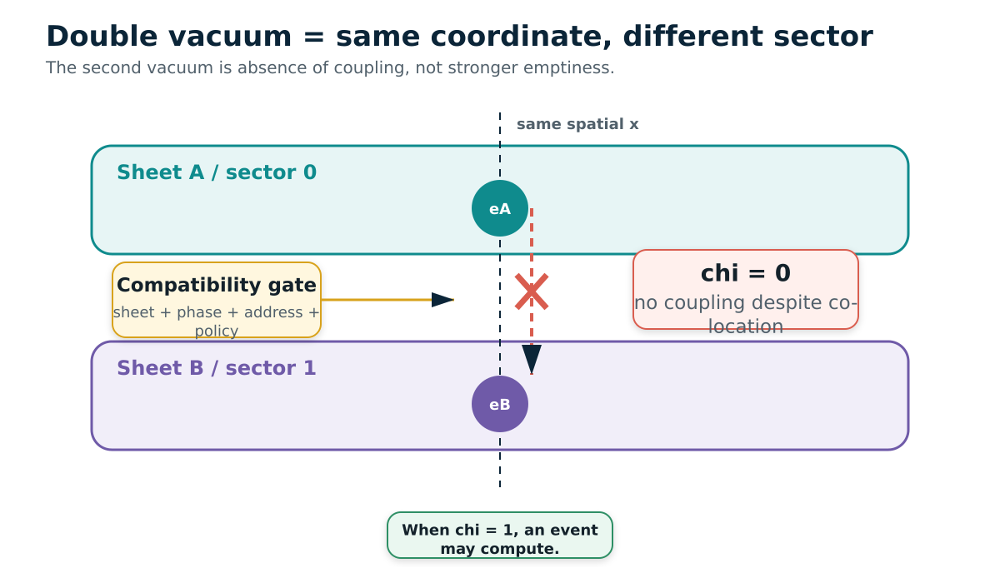
x_A = x_B does not imply can_couple(A,B)can_couple(A,B,context) = chi(sheet, phase, address, mode, time, policy)Double vacuum does not establish literal immunity, ghost-like passage, bodily control, or a new vacuum law. Those literalized claims are excluded. In hardware, the bounded translation is uncoupled or deliberately isolated modes and channels. [S6 pp. 2, 10]
The quad hourglass condenses four recurring motifs: a four-sector partition, a central pinch or rank-changing event locus, a vertical invariant axis, and a swept phase-controlled coupling arc. In the mature reading, it is a routing visualization and transition table. It is not by itself a proof of non-orientable physics. [S1 p. 6; S2 pp. 23-25]
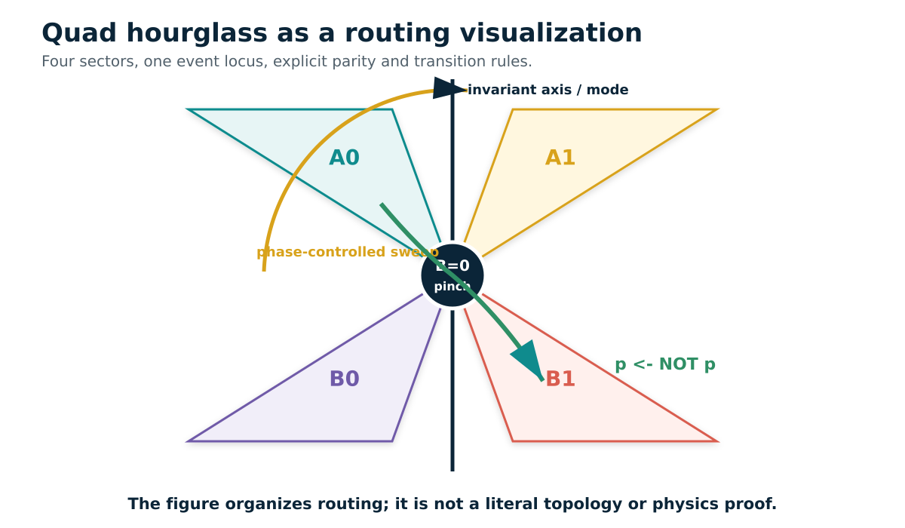
The bit has a narrow role. It may encode route A/B, orientation parity, admitted/rejected, fresh/stale, or available/unavailable, but only under a declared schema. The bit never contains the optical amplitude, full geometry, uncertainty, lineage, policy, and branch state. [S1 pp. 5-6; S6 p. 7]
p_after = NOT p_beforeA Klein-bottle or Mobius motif is retained only as an orientation or gluing abstraction. To become executable, it needs explicit ports, an orientation map, a quotient or identification rule, and a transfer function. Without those objects, the topology remains metaphor. The bounded hardware report makes this discipline explicit. [S6 pp. 2, 5, 10]
The alchemical/topological vocabulary can be organized as a data architecture: program, state schema, relation family, compatibility predicate, event log, provenance key, branch context, and materialized view.
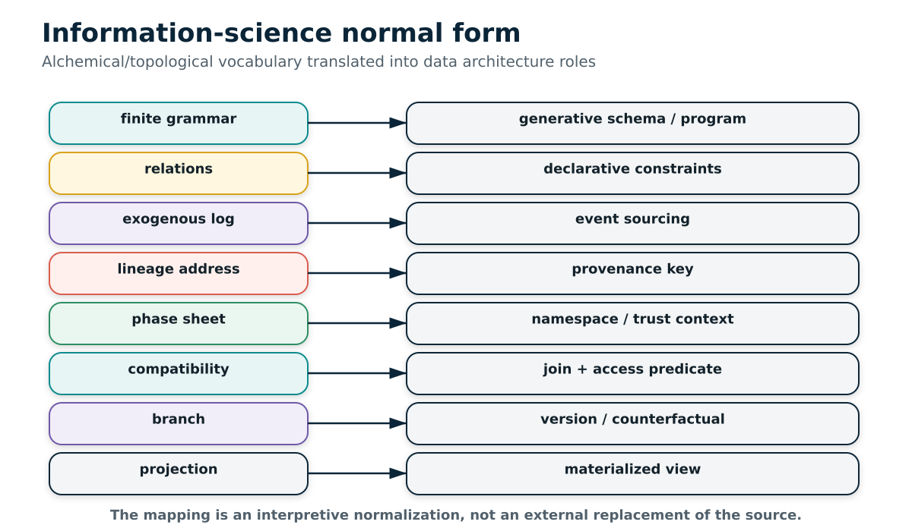
The mapping is useful because it makes implementation obligations visible. A "finite grammar" must become a typed generative program. A "relation" must become a declarative predicate or solvable expression. A "phase sheet" must become a namespace or context key. A "lineage address" must become a provenance identifier with split/merge rules. A "projection" must become a materialized view whose loss and staleness are understood.
| Corpus term | Information-science correspondence | Required explicit object |
|---|---|---|
| Finite grammar | Generative schema/program | Versioned rule set, input types, closure limits |
| State manifold | Typed state model | Schema for geometry, time, phase, sheet, address, branch, parity |
| Relation algebra | Declarative constraint system | Expression family, parameters, numerical solver contract |
| Compatibility | Join and access predicate | Boolean plus reason codes and predicate version |
| Event | Event-sourced fact | Timestamp/interval, guard, confidence, before/after state hashes |
| Transition | State-machine command | Typed mutation, invariant checks, branch policy |
| Lineage | Provenance graph | Parent/child edges, split/merge/reconciliation rules |
| Exogenous log | Append-only novelty stream | Source, timestamp, authority, replay semantics |
| Projection | Materialized view | Query, transform, resolution, error, refresh policy |
Terms such as event sourcing, materialized view, provenance graph, and query planner are not consistently used in the source PDFs. They are the report's information-science normal form for making the source operators implementable.
The corpus proposes that closed dynamics need not be stored frame by frame. A seed and finite grammar regenerate predictable structure; an exogenous log stores only irreducible novelty; branch history and lineage store the information needed to reconstruct splits, merges, and interventions. The mature report treats this as a bounded hypothesis, not a zero-memory theorem. [S1 pp. 7-8; S5 pp. 10-11]
M_required ~= seed + grammar + exogenous_log + necessary_branch_historyThis is an event-sourced design pattern: state may be recomputed from compact generative structure plus an authoritative log. The advantage exists only when replay, solving, and branch resolution remain cheaper than storing or materializing the avoided structure. [S1 p. 8]
lineage_address = H(seed, grammar_path, ordered_parent_events)
split(parent, labels):
create child branches with parent_address and unique branch labels
merge(parents, policy):
require explicit reconciliation policy
record all parent addresses and invariant conflicts
reconstruct(address, t):
load seed + grammar version
apply admitted exogenous events up to t
verify invariant and predicate versionsThe core is best judged by the questions it can answer without reconstructing a conventional scene pipeline. The source experiment program names state-at-time, next-event, events in support, phase coupling, transition routing, and identity reconstruction. This package adds reason-coded compatibility and explicit projection as interface operations. [S1 pp. 11-12]
| Query | Inputs | Dominant operation | Output | Failure modes | Source |
|---|---|---|---|---|---|
state_at | entity, time | Closed trajectory/grammar expression | State tuple q_e(t) | Expression size; branch history; conditioning | [S1 pp.7-8,10-12] |
next_event | entity, t0, relation family | Compatibility filter plus certified root solver | Earliest admitted event | Event density; multiple roots; tangency; degeneracy | [S1 pp.7-8,11-12] |
events_in_support | support, interval, policy | Analytic support pruning then relation evaluation | Ordered event set | Poor support/compatibility turns into broad scan | [S1 pp.6-8,11] |
can_couple | entity A, entity B, context | Sheet/phase/address/mode/policy predicate | Boolean plus reason code | Predicate design; semantic grounding | [S1 p.6; S5 pp.32-33; S6 p.7] |
transition | event, pre-state, context | Typed transition rule | Post-state, parity route, invariant check | Ambiguous or non-confluent rules | [S1 pp.6-7; S6 p.7] |
reconstruct_identity | seed, grammar path, log, branch | Lineage replay/reduction | Identity/provenance record | Split/merge collision; log incompleteness | [S1 pp.8,11-12; S5 pp.7-11] |
project_view | query result, camera/display policy | Downstream renderer or vector adapter | Image/vector/print output | Projection errors do not alter authoritative state | [S1 pp.9-10; S7 pp.1-10] |
measure_throughput | event log, time window, error boundary | Count verified B.C.E. events only | Theta_sph and benchmark vector | Miss/false events; energy boundary; calibration | [S6 p.6] |
function NEXT_EVENT(entity e, time t0, relation_family J):
candidates = []
for relation j in J:
if not policy_can_apply(e, j): continue
roots = certified_roots(R_j(q_e(t)) = 0, t >= t0)
for r in roots:
state = state_at(e, r)
if support_contains(C_j, state) and chi(e, j, r) == 1:
candidates.append(certified_event(j, r, state))
return earliest_ordered(candidates)
function APPLY_TRANSITION(event ev):
verify guard, predicate version, confidence, and pre-state hash
post = T_ev(pre_state, context)
verify invariants
append event and lineage edges
return postThe corpus overlaps deeply with graphics, but its mature claim is query-versus-projection, not sphere-versus-grid.
Rasterization, raymarching, and ray tracing answer projection and transport questions. The proposed substrate answers state, event, compatibility, identity, and reachability questions. The two layers overlap because implicit geometry, cones, local charts, and visibility can feed images. They remain distinct because the image is an output of a query, not the ontological store. [S1 pp. 9-10]
| System | Primary question | Overlap with the corpus | Why it is not the core |
|---|---|---|---|
| Rasterization | How do stored surfaces project into pixels now? | Can emit a view from queried geometry/state. | Pixels and frames are not authoritative world state. |
| Raymarching | What does repeated field sampling along a projected direction reveal? | Uses SDFs and directional queries. | Repeated sampling is explicitly not the mature event-solving core. |
| Ray tracing | Which transport/visibility paths connect endpoints? | Cones and supports may define candidate paths. | The core cone also represents causal, semantic, collision, memory, and grammar support. |
| Vector graphics | Which analytic paths should be stroked/filled? | Implicit boundaries can become vector contours. | Output paths do not define phase, lineage, branch, or event authority. |
| Proposed substrate | What state holds, what event occurs next, and which sectors can couple? | Can project to any of the above. | Direct relation algebra and event calculus are constitutive. |
The correct comparison is therefore not "spherical graphics versus Cartesian graphics." It is "query semantics versus projection semantics." Local polar or spherical charts may improve a sensor or output adapter without requiring global remeshing of the state model.
The KC Vector document is most useful as a projection-layer case study. It starts with a local log-polar address, evaluates implicit SDF/CSG boundaries, accumulates phase and amplitude near an edge, and quantizes the result for display or print. This is compatible with the mature corpus only when KC output is treated as a view over the query substrate, not as the substrate itself. [S7 pp. 1-10]
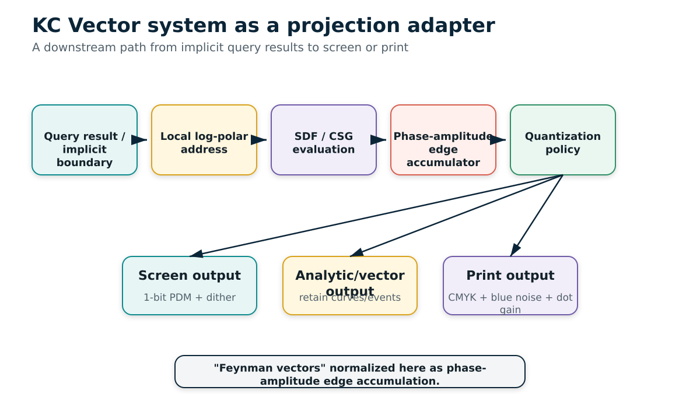
rho = ln(sqrt(x^2 + y^2)), theta = atan2(y,x)union = min(f1,f2), intersection = max(f1,f2), subtraction = max(f1,-f2)A(p) = sum_k a_k exp(i * phi_k)rho.These display and prepress mechanisms do not prove that the world model is 1-bit, log-polar, or quantum. They show how a rich query result can be emitted through a highly constrained output channel.
The optical/perceptual source contributes a productive analogy: every sensor is a local transfer function with an aperture, field of view, angular/radial support, spectral response, sampling mosaic, and uncertainty. The source uses microscopes, camera obscura, compound eyes, retinal mosaics, whiskers, sonar, UV response, and artistic inversion to explore that idea. The mature architecture keeps the local support and filter, not the literal equivalence of all sensors. [S3 pp. 1-20, 24-33]
A sieve can mean a physical receptor mosaic, a spatial index, a mode filter, a support predicate, or a quantization grid. The report therefore requires a layer tag whenever the term is used. "Bypass the sieve" can mean avoiding unnecessary materialization or broad-phase scanning, but it cannot mean that all filtering disappears. Compatibility and support are themselves filters.
Jitter is retained as a controlled sampling or dithering operator. It can shift an aperture, sensor, or quantization pattern to fill blind spots, estimate uncertainty, or decorrelate aliasing. It does not restore a mathematically continuous world from finite samples without an error model.
q_sample(t) = q_nominal(t) + epsilon(t), with declared spectrum and boundThe strongest spherical claim is local: a sensor, coupler, agent, or query has radial reach, angular support, orientation, shell structure, and uncertainty. The world may remain hybrid. This avoids both raster-everything and polar-everything. [S1 pp. 1, 6; S6 p. 3]
A useful first build is deliberately small, headless, typed, and falsifiable.
Equation World Zero is the corpus's proper first experiment. It uses a restricted state space, simple analytic trajectories, a bounded relation family, explicit sheets and parity, finite grammar depth, lineage-based identity, and symbolic query outputs. It does not begin with a renderer. [S1 pp. 7, 11-12]
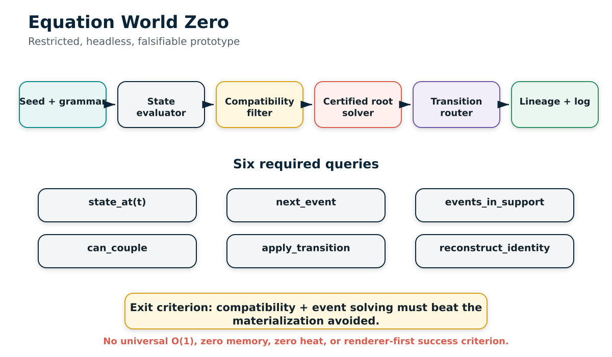
The included Python prototype demonstrates closed-form state_at, analytic line/circle event roots, compatibility rejection for co-located sheets, parity routing, lineage update, and an auditable event record. Four unit tests pass. It is not a renderer, topology proof, general physics engine, or universal solver.
state_at(t)next_event(t0)events_in_supportcan_coupleapply_transitionreconstruct_identityThe package includes a deterministic example that turns the prose operators into an auditable trace. An entity begins at (-2, 0.25), moves right at unit speed, occupies sheet 0, and carries invariant tag mass-class-A. Relation B0 is the line x=0. Its support and compatibility policy admit sheet 0. The earliest root is t*=2. The transition moves the entity to sheet 1, toggles parity, creates a branch, updates the route field, and derives a new lineage address.
{
"entity_id": "e-alpha",
"time": 0.0,
"position": [
-2.0,
0.25
],
"phase": 0.0,
"sheet": 0,
"address": "0c34c34eab1a93ccece2456125c824a2",
"branch": "root",
"parity": 0,
"invariant_tags": [
"mass-class-A"
],
"state_variables": {}
}{
"entity_id": "e-alpha",
"time": 2.0,
"position": [
0.0,
0.25
],
"phase": 0.0,
"sheet": 1,
"address": "b29237d737a4dbc18a5e4b1b895c0a52",
"branch": "root/route-A-to-B@2",
"parity": 1,
"invariant_tags": [
"mass-class-A"
],
"state_variables": {
"route": "B"
}
}| Field | Value |
|---|---|
| event_id | 8b1aa2790d0369fe7b3d4152 |
| entity_id | e-alpha |
| relation_id | B0 |
| transition_id | route-A-to-B |
| time | 2.0 |
| support_admitted | True |
| compatible | True |
| compatibility_reasons | [] |
| predicate_version | chi-v0.1 |
| guard_crossed | True |
| root_multiplicity | 1 |
| confidence | 1.0 |
| pre_state_hash | ad16fb2aabcdca40 |
| post_state_hash | 0bcb26d426ef00eb |
| lineage_parent | 0c34c34eab1a93ccece2456125c824a2 |
| branch_created | root/route-A-to-B@2 |
| parity_before | 0 |
| parity_after | 1 |
| invariant_report | {"passed": true, "checked": ["mass-class-A"]} |
The decisive criterion is not whether the system sounds non-raster. Compatibility plus event solving must grow more slowly than the structure the system avoids materializing. Every benchmark therefore needs an electronic or conventional reference, declared error boundaries, and a kill criterion. [S1 p. 8; S6 pp. 6, 9-10]
| Experiment | What it tests | Success evidence | Failure/kill evidence |
|---|---|---|---|
| Horizon skipping | Whether state_at(t) cost depends on skipped steps or expression size. | Cost remains tied to expression complexity across larger time horizons. | Expression or branch growth tracks elapsed horizon. |
| Compatible root solving | Whether support and chi prune candidate events enough. | Solver candidate count stays sparse; certified ordering is stable. | Event explosion or broad scan dominates. |
| Double-vacuum co-location | Whether same-coordinate states remain isolated until admitted. | No cross-sheet event before explicit compatibility. | Implicit coupling leaks across sectors. |
| Transition routing | Whether parity/sheet changes preserve invariants and lineage. | Deterministic post-state and reconstructable audit. | Ambiguous ordering, lost lineage, or invariant failure. |
| Grammar depth stress | Whether rule composition stays closed or normalizable. | Expression growth is bounded within declared family. | Closure fails or expressions grow without practical bound. |
| Split/merge identity | Whether lineage reconstructs nontrivial persistence. | All parents/children and reconciliation decisions are recoverable. | Address collisions or irreversible ancestry loss. |
| Projection independence | Whether multiple outputs derive from one authoritative query state. | Raster/vector/print outputs disagree only within declared projection error. | Output pipeline silently becomes the authority. |
| Metric | Definition | Purpose |
|---|---|---|
| Query latency distribution | median, p95, p99 by query class | Separates typical from degeneracy/tail behavior. |
| Candidate reduction | relations before support / after support / after compatibility | Measures actual pruning value. |
| Root certification rate | certified events / attempted event queries | Tracks solver reliability. |
| Miss / false event rate | against exact or high-precision reference | Defines correctness boundary. |
| Expression growth | nodes/bytes versus grammar depth and branch history | Tests closure and normalization. |
| Novelty memory | stored log + branch bytes versus materialized baseline | Tests memory hypothesis. |
| Lineage reconstruction | success, ambiguity, time, collision count | Tests identity semantics. |
| Projection divergence | difference between views of same query result | Tests downstream-view discipline. |
The physical path is optional and should not be confused with the software ontology. S6 translates the corpus into a conventional optofluidic experiment: a local spherical input field, a tunable liquid coupler, a 2x2 interferometric waveguide, balanced detectors, and a digital sidecar that applies support, compatibility, guard, confidence, parity, and lineage logic. [S6 pp. 1-9]
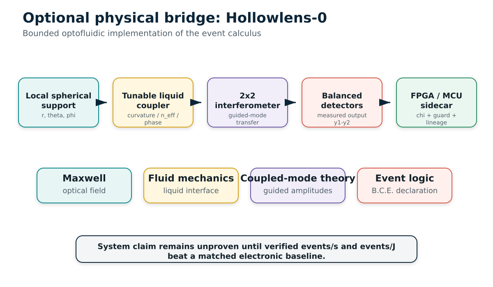
Theta_sph = N_verified / Delta_tA verified event counts only if it was inside the declared support, compatible with the selected channel, crossed the measured guard, and met the confidence threshold. Photon flux, baud rate, or propagation speed alone is not spherical throughput. [S6 p. 6]
The system-level claim remains unproven until the complete source, liquid actuator, waveguide, detector, calibration loop, and B.C.E. sidecar deliver more verified events per second and per joule than a matched electronic baseline at the same error and uncertainty boundary. [S6 pp. 9, 12]
The mature corpus is strongest where it admits failure. Long horizons, logarithmic coordinates, phase schedules, singular centers, near-singular operators, tangencies, coincident surfaces, rank changes, branch explosion, event explosion, and semantic grounding are not implementation footnotes. They determine whether the ontology can be executed at all. [S1 pp. 8, 11]
| Risk | Failure symptom | Required response | Kill criterion |
|---|---|---|---|
| Algebraic closure | Composition leaves the solvable/normalized relation family. | Restrict grammar, normalize, or compile to certified approximation. | Expression growth eliminates direct-query advantage. |
| Event explosion | Too many roots or candidate relations. | Improve support/compatibility, bound interval, simplify relation family. | Solver work approaches/exceeds materialization baseline. |
| Degeneracy | Tangency, coincident surfaces, multiple roots, unstable ordering. | Interval methods, multiplicity tracking, tie policy, uncertainty. | Missed or unordered events exceed tolerance. |
| Numerical conditioning | Long-horizon phase drift, log singularity, rank instability. | Scaled coordinates, certified numerics, error bounds, reference solver. | Answers cannot be certified at required tolerance. |
| Branch explosion | Counterfactual history grows combinatorially. | Prune, merge with explicit policy, summarize, checkpoint. | Memory or query cost scales with all unbounded branches. |
| Lineage ambiguity | Splits/merges cannot be reconstructed. | Explicit parent sets and reconciliation rules. | Identity collisions or unrecoverable ancestry. |
| Semantic underspecification | Compatibility says "yes/no" without explainable policy. | Reason codes, versioned predicates, typed permissions. | System cannot audit why an event was admitted. |
| Projection feedback | Display artifacts alter authoritative state. | One-way view contract; explicit sensor-to-log events only. | Framebuffer becomes implicit state store. |
| Hardware drift | Optical transfer changes with temperature/aging/liquid state. | Reference channels, calibration, bounded uncertainty. | Calibration energy/time erases benefit. |
The matrix below preserves the source claims while preventing the report from presenting them at the wrong evidence level. "Retain" means the operator belongs in the architecture. "Test" means the claim becomes an experiment. "Demote" means the motif remains useful but not literal. "Reject" means it is not accepted as a requirement or established result.
| ID | Claim | Assessment | Notes and source |
|---|---|---|---|
C01 | The authoritative object is a directly queryable relation/state/event substrate rather than an image or frame buffer. | canonical retain | Core interpretive rule. [S1 pp.1,5-10; S5 pp.1,9] |
C02 | Local spherical or radial-angular supports organize relevance, coupling, sensing, and measurement. | canonical retain | Local chart only; not global remeshing. [S1 pp.1,5-7; S6 pp.3,6] |
C03 | A finite grammar plus relations, transitions, invariants, and an exogenous log can define a restricted equation world. | canonical architecture retain | Prototype in bounded relation families. [S1 pp.5-8,11-12; S5 pp.10-11] |
C04 | SDF=0 or B=0 is best read as an event/transition surface, not a place to keep marching through. | canonical correction retain | Prevents hidden rasterization from returning. [S1 p.7; S2 pp.16-19; S5 p.54] |
C05 | Events require relation satisfaction, support admission, and compatibility. | canonical retain | Geometry alone is insufficient. [S1 pp.6-8; S6 pp.3,5,7] |
C06 | Double vacuum means co-location without coupling across incompatible phase/sheet/address sectors. | canonical retain | Absence of coupling, not literal emptiness. [S1 p.6; S5 pp.32-33; S6 pp.2,4] |
C07 | One bit is a routing/parity/validity flag, not the complete state. | canonical correction retain | Schema is mandatory. [S1 pp.5-7; S6 pp.2,7] |
C08 | Identity should persist by lineage and invariants rather than current coordinate alone. | canonical retain | Split/merge rules still required. [S1 pp.1,5-8,11; S5 pp.6-8] |
C09 | Closed dynamics can be regenerated from seed and grammar, while irreducible novelty is logged. | architecture hypothesis prototype | Measure memory and recomputation cost. [S1 pp.8,11-12; S5 pp.10-11] |
C10 | For a fixed closed expression, state_at(t) cost may be independent of skipped timesteps. | bounded complexity claim test | Not universal O(1). [S1 p.8] |
C11 | next_event can replace frame replay when compatible event roots are tractable. | bounded complexity claim test | Can fail from event density, degeneracy, branches. [S1 pp.7-8,11-12] |
C12 | Compatibility plus event solving must cost less than the materialization avoided. | canonical success criterion retain | Primary falsification rule. [S1 p.8; S6 p.6] |
C13 | Rasterization, raymarching, and ray tracing may remain downstream projections. | canonical retain | Do not mistake projector for state space. [S1 pp.9-10; S5 p.9] |
C14 | The KC Vector system can be interpreted as a downstream projection adapter over log-polar addresses and implicit boundaries. | projection proposal retain with caveat | Not the core substrate. [S7 pp.1-10] |
C15 | KC Feynman vectors are a fully specified quantum path-integral method. | unsupported terminology rename/demote | Source supplies no derivation; normalize to phase-amplitude accumulator. [S7 pp.1-3] |
C16 | A log-polar chart turns radial scaling into additive translation in log radius. | source-defined mathematical observation retain | Chart has singularity/conditioning issues. [S7 p.7; S3 pp.2-3] |
C17 | Sieve and jitter motifs describe sensor sampling, dithering, and candidate reduction. | cross-domain analogy retain as layer-specific | Not proof that all sampling can vanish. [S3 pp.13-15,24-33; S7 pp.8-10] |
C18 | All spatial sieves, BVHs, octrees, and broad phases are eliminated universally. | inflated claim demote/test | Only possible for restricted analytic supports with effective compatibility. [S2 pp.30-32; S5 pp.14-16] |
C19 | Klein bottle topology is a useful routing/gluing abstraction. | bounded abstraction retain | Must specify ports, orientation map, transfer matrix. [S1 p.6; S6 pp.2,5] |
C20 | A literal Klein-bottle device automatically prevents tunneling or physical interaction. | unsupported physical claim reject | Topology is not a substitute for dynamics or fabrication. [S2 pp.16-25; S5 pp.35,64] |
C21 | The quad hourglass is a four-sector routing visualization around a rank-changing event locus. | normalized interpretation retain | Not a topology proof. [S1 p.6; S2 pp.23-25; S5 pp.33,54] |
C22 | lambda=0 may mark rank loss/null-space entry at an event. | normalized mathematical motif retain with tolerance | Numerical thresholds and operator definition required. [S2 pp.22-25; S5 pp.33,54] |
C23 | The golden ratio is required for correctness or loop avoidance. | speculative motif reject as requirement | May be an optional schedule; no proof supplied. [S2 pp.12-19; S4 pp.10-11] |
C24 | Phi is used consistently across the corpus. | false due to symbol overload correct | Separate angle, phase, golden ratio, and torque. [S2; S4; S5] |
C25 | The Ben Burgers overlap can be read as shared domain, interference, or tolerance. | geometric brainstorming retain as analogy | No unique mathematical ratio established. [S4 pp.16-19] |
C26 | Zero-based indexing changes 21+7+7 from 35 to 36. | incorrect if read as arithmetic correct | 35 is an index naming the 36th position. [S4 pp.1-3] |
C27 | Hollowlens-0 is a bounded optofluidic demonstrator with a digital sidecar. | canonical prototype retain | Must preregister support, modes, thresholds, error and energy boundary. [S6 pp.4,7-10] |
C28 | Matrix-in-glass is a calibrated optical transfer function. | bounded hardware translation retain | Not a zero-cost computer. [S6 pp.2,5] |
C29 | Double vacuum in hardware can be implemented as uncoupled or isolated modes/channels. | bounded hardware translation retain | Measure crosstalk and false events. [S6 pp.2,4] |
C30 | Spherical throughput is verified events per second with support, compatibility, guard and confidence. | canonical metric retain | Report loss, energy, miss/false rates and calibration. [S6 pp.3,6,11] |
C31 | The integrated optical system has proven an advantage over matched electronics. | not established test | Component feasibility is not system validation. [S6 pp.9-12] |
C32 | The architecture has zero latency, zero heat, zero power, or zero memory. | explicitly rejected totalizing claim reject | All physical and computational layers carry cost. [S2 pp.15,26-35; S5 multiple; S6 pp.2,10] |
C33 | The architecture universally solves chaos or all PDEs exactly. | explicitly rejected totalizing claim reject | Restricted relation families only. [S2; S5; S6 p.10] |
C34 | The architecture directly controls biology, gene expression, CRISPR, protein folding, or medical outcomes. | unsupported application claim exclude | At most a simulation/design prompt; not a mechanism. [S5 pp.3-6; S6 p.10] |
C35 | Political, psychological, and personal narratives in later source pages are technical proof. | metaphorical narrative exclude from core | Preserve as provenance, not system mechanism. [S3 later pages; S5 pp.13-35] |
C36 | A person or identity can become physically untouchable through phase sheets or UUIDs. | unsupported literal claim reject | Reinterpret only as access-control/provenance metaphor. [S5 pp.14-18,32-35] |
C37 | The headless query-first prototype is the truest first experiment. | canonical recommendation retain | Avoid renderer-first benchmarking. [S1 pp.9,11-12; S6 p.9] |
C38 | A hybrid engine remains a practical bridge. | supported engineering bridge retain | Stable core plus optional rendering/volumetric stages. [S1 p.9] |
C39 | Numerical conditioning is part of the ontology, not an implementation afterthought. | canonical risk retain | Log coordinates, tangencies, coincident surfaces, rank changes. [S1 pp.8-9] |
C40 | The first useful benchmark is six queries: state, next event, events in cone, phase coupling, transition routing, identity rebuild. | canonical experiment plan retain | Forms the Equation World Zero exit criteria. [S1 pp.11-12] |
The source corpus closes with the right instruction: formalize Equation World Zero, and begin with state, compatibility, event, transition, identity, and memory. The proof target is narrow: one nontrivial relation family that answers state-at-time and next-event without replaying every frame, under explicit compatibility, with stable lineage, bounded expression growth, and memory proportional to novelty rather than geometric extent. [S1 p. 12]
Proceed only if compatibility plus event solving and lineage maintenance cost less than the state/materialization work avoided, at the same correctness and uncertainty boundary. Otherwise retain the useful operators inside a conventional hybrid engine.
This lexicon is the detailed decoder for the corpus. A status of "canonical" refers to the source-derived architecture; "normalized" refers to a disciplined translation; "projection" identifies downstream output behavior; "rejected" or "excluded" marks a boundary.
| Term | Normalized meaning | Formal role | Status | Source |
|---|---|---|---|---|
| Universal O(1) | The mature sources reject a universal constant-cost universe. Only fixed closed expressions may have horizon-independent state evaluation. | not accepted | rejected totalizing claim | [S1 pp.1,8; S6 p.10] |
| Zero memory / heat / latency | Rejected as system claims. Storage, branch history, optical sources, actuation, detection, calibration, and control all carry costs. | not accepted | rejected totalizing claim | [S1 pp.1,8; S6 pp.2,10] |
| Biological or medical control | The corpus contains analogies and application prompts, but the bounded engineering report explicitly makes no general biological or medical mechanism claim. | not established | excluded from technical core | [S5 pp.3-6; S6 p.10] |
| Term | Normalized meaning | Formal role | Status | Source |
|---|---|---|---|---|
| Rasterization | A downstream projection that maps stored or computed geometry into pixels. The corpus rejects using the raster as the authoritative world model. | materialized image view | downstream projection | [S1 pp.1,9-10; S5 pp.1,9; S7] |
| Raymarching | Repeated field sampling along projected directions. It may visualize an SDF but is explicitly not the mature core. | sample f along ray | downstream / not core | [S1 pp.1,7,9-10; S2 pp.12-17] |
| Ray tracing | Transport or visibility path computation. It can consume the substrate but does not define the substrate. | path/visibility solver | downstream projection | [S1 pp.9-10] |
| Hybrid engine path | A bridge architecture with stable geometric/graph world state plus optional cone integration, volumetrics, raymarching, or display stages. | core + projection stage | supported bridge | [S1 p.9] |
| Term | Normalized meaning | Formal role | Status | Source |
|---|---|---|---|---|
| Headless query-first path | The preferred experiment: algebra, compatibility, events, transitions, lineage, and logs before images. Success is not visual fidelity. | query core | canonical prototype path | [S1 pp.9,11-12; S6 p.9] |
| Term | Normalized meaning | Formal role | Status | Source |
|---|---|---|---|---|
| State manifold | The product space that carries position, time, phase, sheet, lineage address, and branch. It is the authoritative state space, not an image buffer. | Q = P^n x R_time x S^1_phase x Z2_sheet x A_address x B_branch | canonical | [S1 pp.5-6; S5 pp.1,9-11] |
| Finite grammar | A bounded generative rule set that produces closed dynamics and relation expressions instead of storing a complete object inventory. | G | canonical | [S1 pp.5-7,11-12; S5 pp.10-11] |
| Relation algebra | Declarative equations or predicates that define possible states and transition surfaces. | R_j(q;theta_j)=0 | canonical | [S1 pp.1,5-7; S5 pp.1,9] |
| Event | A guard crossing that is admitted by support and compatibility. An event is not merely a geometric hit. | t* = min{t >= t0 : R_j(q(t))=0 and C<=0 and chi=1} | canonical | [S1 pp.6-8; S6 pp.3,5,7] |
| Transition | The state update applied at an admitted event while preserving declared invariants and lineage. | q(t*+) = T_j(q(t*-), context) | canonical | [S1 pp.6-7] |
| Invariant | A property that must persist across transitions, coordinate changes, or reconstruction. | I | canonical | [S1 pp.1,5-7,11; S5 pp.7-11] |
| Compatibility predicate | A Boolean or typed predicate controlling whether co-located states, channels, or relations may couple. | chi(e,j,t) in {0,1} | canonical | [S1 pp.6-8; S5 pp.13-16,32-33; S6 pp.3,5,7] |
| Term | Normalized meaning | Formal role | Status | Source |
|---|---|---|---|---|
| Pulse-density modulation | A temporal 1-bit stream whose pulse density represents intensity. It is a possible output adapter for a physical display, not the state substrate. | PDM | projection-layer proposal | [S7 pp.4-6] |
| Term | Normalized meaning | Formal role | Status | Source |
|---|---|---|---|---|
| B.C.E. | Bounded Compatibility Event: support admitted, channel compatible, guard crossed, and confidence threshold met. | support and chi and g=0 | canonical bounded operator | [S6 pp.1,3,5,7] |
| Term | Normalized meaning | Formal role | Status | Source |
|---|---|---|---|---|
| Signed distance field | An implicit scalar field that may define geometry or guards. In the mature reading it is evaluated as a relation; raymarching is optional downstream behavior. | f(q) | canonical with projection variant | [S1 pp.7,9-10; S7 pp.1-2] |
| Torque vector | The corrected interpretation in the Ben Burgers document for twisting or folding an oval/phi-like cross-section. Use tau, not phi, to avoid symbol collision. | tau | geometric brainstorming | [S4 pp.11-14] |
| Term | Normalized meaning | Formal role | Status | Source |
|---|---|---|---|---|
| Log-polar chart | A local coordinate transform rho=log r, theta=atan2(y,x). It supports radial multiscale addressing but introduces singularity and conditioning risks. | rho=ln r; theta=atan2(y,x) | projection/local chart | [S2 pp.12-19; S3 pp.2-3; S7 pp.1,7] |
| Term | Normalized meaning | Formal role | Status | Source |
|---|---|---|---|---|
| Phase-amplitude edge accumulator | A source-faithful normalization of the KC Feynman-vector idea: accumulate weighted phase samples near an implicit boundary, then quantize for output. | A(p) | decoder inference | [S7 pp.1-3] |
| Term | Normalized meaning | Formal role | Status | Source |
|---|---|---|---|---|
| Feynman vector | The KC document uses this name for phase-amplitude vectors integrated near SDF boundaries. No formal path-integral derivation is supplied, so this report renames it a phase-amplitude edge accumulator. | A(p)=sum_k a_k exp(i phi_k) | speculative / renamed for clarity | [S7 pp.1-3] |
| Term | Normalized meaning | Formal role | Status | Source |
|---|---|---|---|---|
| 1-bit log-polar LUT | In exploratory sources this alternates between active-sector mask, parity field, and output quantizer. The report separates these roles rather than treating one bit as the whole state. | mask(rho,theta) | role-overloaded proposal | [S2 pp.12-19; S7 pp.1-5] |
| Term | Normalized meaning | Formal role | Status | Source |
|---|---|---|---|---|
| Anisotropic dithering | Log-radius- and angle-aware stochastic quantization used for screen or print output. | blue-noise threshold | projection-layer proposal | [S7 pp.5,8-10] |
| Prepress adapter | A static 1-bit halftone path: CMYK mapping, log-polar blue noise, SDF edge lock, and dot-gain compensation. | 1-bit TIFF/PDF | projection-layer proposal | [S7 pp.8-10] |
| Term | Normalized meaning | Formal role | Status | Source |
|---|---|---|---|---|
| Matrix-in-glass | A calibrated passive or tunable optical transfer matrix in a waveguide mesh. It is not a stored picture or zero-energy computer. | optical transfer matrix | bounded hardware translation | [S5 pp.47-50; S6 pp.2,5] |
| Liquid substrate | A liquid lens, overclad, or core coupled to a solid photonic substrate to tune focus, effective index, phase, or mode coupling. | n_eff(u) | bounded hardware translation | [S5 pp.58-64; S6 pp.2-5,8] |
| Term | Normalized meaning | Formal role | Status | Source |
|---|---|---|---|---|
| Digital sidecar | Conventional electronics for calibration, thresholds, uncertainty, lineage, policy, drift detection, and fallback. Its necessity prevents magical zero-latency claims. | FPGA/MCU | canonical control element | [S6 pp.4,7-10] |
| Term | Normalized meaning | Formal role | Status | Source |
|---|---|---|---|---|
| Exogenous log | A record of irreducible external novelty that cannot be regenerated from seed and grammar. | L | canonical | [S1 pp.6,8,11-12; S5 pp.10-11] |
| Novelty-proportional memory | Memory discipline in which closed dynamics are regenerated and storage grows with external novelty and necessary branch history rather than geometric extent alone. | M ~ seed + grammar + log + branch history | bounded hypothesis | [S1 pp.8,11-12; S5 pp.10-11] |
| Lineage | Persistent provenance through splits, merges, transitions, and coordinate changes. | lineage(e) | canonical | [S1 pp.1,5-8,11; S5 pp.6-8,11] |
| Ontological address | A generative identity derived from seed, grammar path, and invariant history; normalized here as a provenance key rather than a literal magic UUID. | a_e = H(seed,path,lineage) | normalized operator | [S1 pp.5-6; S5 pp.6-8] |
| Branch | A version, fork, or counterfactual path in the state evolution. Branch history is a real cost and can explode. | b_e | canonical | [S1 pp.5-8,11] |
| Zero-based timeline | A reference-frame or indexing shift: an offset from index 0 identifies positions differently from 1-based counting. It does not change arithmetic. | index 0 | corrected computing motif | [S4 pp.1-6] |
| Materialized view | A rendered image, mesh, cache, or sampled field derived from the authoritative relation/event state. This term is the report's information-science translation. | view(Q,query) | decoder inference | [S1 pp.1,9-10; S5 p.9] |
| Term | Normalized meaning | Formal role | Status | Source |
|---|---|---|---|---|
| Sieve | A filter or candidate-reduction stage: aperture, receptor mosaic, BVH, octree, mask, or compatibility filter. The corpus aims to replace broad materialization with analytic support and compatibility, not prove all indexing unnecessary. | filter/index | normalized caution | [S3 pp.13-15,24-33; S5 pp.14-16; S2 pp.30-32] |
| Term | Normalized meaning | Formal role | Status | Source |
|---|---|---|---|---|
| Eigenvector | An invariant direction under a transformation, used as an anchor or stable mode. | A v = lambda v | normalized operator | [S2 pp.20-25; S5 pp.2,17,51] |
| Null space | The inactive or rejected subspace produced by a compatibility/kernel operation. It should mean algebraic exclusion, not physical disappearance. | ker A | normalized operator | [S2 pp.22-25; S5 pp.15,33] |
| Term | Normalized meaning | Formal role | Status | Source |
|---|---|---|---|---|
| Eigenvalue zero | A rank-loss or null-space event used metaphorically as an off-state. In an implementation it must be tied to a defined operator and numerical tolerance. | lambda approx 0 | normalized with numerical guard | [S2 pp.22-25; S5 pp.33,54] |
| Term | Normalized meaning | Formal role | Status | Source |
|---|---|---|---|---|
| Type safety | Keep electromagnetics, fluid mechanics, coupled-mode theory, event logic, topology, and information semantics in their own domains with explicit interfaces. | domain separation | canonical engineering discipline | [S6 pp.2,5] |
| Term | Normalized meaning | Formal role | Status | Source |
|---|---|---|---|---|
| Spherical throughput | Verified compatible events or answered queries per second at a declared error budget, not raw photon flux or propagation speed. | Theta_sph=N_verified/Delta t | canonical metric | [S6 pp.3,6,11] |
| Term | Normalized meaning | Formal role | Status | Source |
|---|---|---|---|---|
| Phi: angular coordinate | The local angular coordinate or lighthouse incidence angle. Distinguish from phase schedule and golden ratio. | phi_angle | ambiguous source symbol | [S2 pp.12-19; S5 pp.2-3] |
| Phi: phase law | A phase coordinate or schedule used in compatibility and coupling. Irrational schedules are presented as heuristics, not proven requirements. | phi_phase(t) | canonical concept, heuristic schedule | [S1 pp.5-6; S2 pp.14-19; S5 pp.2-3] |
| Term | Normalized meaning | Formal role | Status | Source |
|---|---|---|---|---|
| Golden ratio | An optional scaling or phase motif in exploratory sources. The mature architecture does not require the golden ratio. | phi_g=(1+sqrt(5))/2 | speculative motif | [S2 pp.12-19; S4 pp.10-11] |
| Term | Normalized meaning | Formal role | Status | Source |
|---|---|---|---|---|
| Hollowlens-0 | A minimum optofluidic demonstrator: scanned input, tunable liquid coupler, 2x2 interferometer, balanced detectors, digital sidecar, and pre-registered event tests. | prototype stack | canonical prototype | [S6 pp.4,7-10] |
| Equation World Zero | Restricted headless prototype with low-dimensional homogeneous coordinates, continuous time, two sheets, one orientation bit, bounded relation families, finite grammar depth, lineage, and symbolic outputs. | EW0 | canonical prototype | [S1 pp.7,11-12] |
| Term | Normalized meaning | Formal role | Status | Source |
|---|---|---|---|---|
| State-at-time query | Direct evaluation of a closed state expression at time t without replaying every intermediate frame. Horizon independence is only plausible for fixed bounded expressions. | state_at(e,t) | canonical bounded claim | [S1 pp.7-8,10-12] |
| Next-event query | Find the earliest compatible relation crossing after t0. Cost is compatibility plus root/event solving plus branch resolution. | next_event(e,t0) | canonical | [S1 pp.7-8,10-12] |
| Events-in-support query | Enumerate admitted events inside a local radial-angular or causal support. | events_in_support(C_alpha,t0,t1) | canonical | [S1 pp.6-7,11] |
| Term | Normalized meaning | Formal role | Status | Source |
|---|---|---|---|---|
| One-bit parity | A narrow route, orientation, validity, freshness, or availability flag. It is not the full world state. | p <- NOT p | canonical narrow role | [S1 pp.5-7; S5 pp.33,44-47,54; S6 pp.2,7] |
| Term | Normalized meaning | Formal role | Status | Source |
|---|---|---|---|---|
| Pinch point | A rank-changing event locus at the center of the hourglass routing visualization. It becomes meaningful only with an explicit guard and transition map. | B=0 | normalized operator | [S1 p.6; S2 pp.24-25; S5 pp.33,54] |
| Quad hourglass | A four-chamber routing partition with a central event locus and sheet/orientation transitions. It is a disciplined visualization, not a topology proof. | four chambers + pinch | normalized operator | [S1 p.6; S2 pp.23-25; S5 pp.32-33,54] |
| Term | Normalized meaning | Formal role | Status | Source |
|---|---|---|---|---|
| Spherical LUT | A radial-angular lookup or local sensory organization. It should be read as a local chart/index, not proof that atoms or the whole world are spherical records. | LUT(r,theta,phi) | metaphorical/local support | [S3 pp.14-20,24-33] |
| Jitter / micro-saccade | Controlled perturbation used to fill sampling gaps, dither quantization, or estimate sub-cell structure. It belongs to sensors and projections, not the invariant core. | epsilon(t) | projection/sensing operator | [S3 pp.13-15,24-33; S7 pp.8-10] |
| Term | Normalized meaning | Formal role | Status | Source |
|---|---|---|---|---|
| Klein bottle | An orientation-reversing gluing or routing abstraction. A usable implementation must specify ports, transition functions, orientation map, and transfer matrix. | quotient/gluing map | demoted from literal physics | [S1 pp.2,6; S2 pp.7-10,16-19; S6 pp.2,5,10] |
| Term | Normalized meaning | Formal role | Status | Source |
|---|---|---|---|---|
| SDF zero / B=0 | The explicit transition or guard surface where event semantics are invoked. It should not be confused with continuing to sample through an SDF. | B(q)=0 or f(q)=0 | canonical | [S1 pp.5-7; S2 pp.16-19; S5 p.54; S6 pp.3,5,7] |
| Term | Normalized meaning | Formal role | Status | Source |
|---|---|---|---|---|
| Double vacuum | Phase-separated co-location: two states may share spatial coordinates yet fail to interact because phase, sheet, orientation, address, or policy are incompatible. The second vacuum is absence of coupling. | same x; chi=0 | canonical | [S1 p.6; S2 pp.14-19; S5 pp.32-33; S6 pp.2,4] |
| Phase sheet | A sector or namespace that labels co-located states and participates in compatibility. | sigma in Z2 or finite sheet set | canonical | [S1 pp.5-6; S5 pp.13-15,32-33] |
| Overlap / weld zone | The slight overlap of folded D/phi shapes is read as intersection, tolerance buffer, constructive interference, or shared domain A intersect B. | A intersect B | metaphorical geometric operator | [S4 pp.16-19] |
| Term | Normalized meaning | Formal role | Status | Source |
|---|---|---|---|---|
| Mobius strip | A one-sided continuity and inversion motif used in the optical/art narrative. It can motivate orientation reversal but is not required by the formal core. | local orientation flip | metaphorical / optional | [S3 pp.5-10] |
| Term | Normalized meaning | Formal role | Status | Source |
|---|---|---|---|---|
| Local spherical support | A local chart for radial reach, angular support, orientation, field of view, uncertainty, or domain of dependence. It is not a global spherical remeshing. | C_alpha(q,t)<=0 | canonical | [S1 pp.1,5-7,9-10; S6 pp.3,6] |
| Cone | An analytic relevance, causal, sensing, collision, memory, or grammar support. It is not intrinsically a ray bundle. | C_alpha | canonical normalized operator | [S1 pp.1,5-7,10; S2 pp.14-19] |
| Shell | A radial support boundary or nested relevance band around a local origin. | r in [r0,r1] | normalized operator | [S1 pp.1,5-6] |
The per-document maps in the ZIP provide longer notes. This condensed table identifies the page clusters that control the report.
| Source | Pages | Topic | Technical reading |
|---|---|---|---|
| S1 | p.1 | Interpretive shift | Projection tools are downstream; ontology is queryable relations/events/phases/identities. |
| S1 | pp.5-6 | Formal core | Product state space, event equation, double vacuum, routing visualization. |
| S1 | pp.7-8 | Prototype and complexity | Equation World Zero, bounded horizon independence, numerical risks. |
| S1 | pp.9-10 | Graphics boundary | Rasterization/raymarching/tracing contrasted with query semantics. |
| S1 | pp.11-12 | Research program | Bottlenecks, six required queries, exit criteria. |
| S2 | pp.14-17 | User correction and analytic core | No raster/marching; analytic solids, SDF roots, phase and parity. |
| S2 | pp.18-25 | Event/routing motifs | Lighthouse around zero, phase layers, eigenspace, quad hourglass. |
| S2 | pp.26-33 | Grammar/memory proposals | Kinematic calculus, procedural grammar, CCD, UUID and compact-state hypotheses. |
| S3 | pp.1-3 | Optical encoding | Spectra, polar harmonics, logarithmic compression, stacked LUTs. |
| S3 | pp.11-15 | Sieve and jitter | Device-mediated scale, receptor mosaics, micro-jitter and sampling gaps. |
| S3 | pp.16-20 | Spherical field proposal | SDF beyond zero, spherical LUT, grammar, frontend CCD motivation. |
| S3 | pp.30-33 | Self-correction | A hard event surface is needed or hidden sampling returns. |
| S4 | pp.1-3 | Zero indexing | Offset 35 from zero is the 36th position; arithmetic remains 35. |
| S4 | pp.16-19 | Fold/overlap | Two D/phi shapes, hinge, overlap as intersection, tolerance, or interference. |
| S5 | pp.1-2 | Cross-domain synthesis | Relation algebra, state/event calculus, phase and local spherical support. |
| S5 | pp.6-11 | Identity and memory | Lineage address, Person(t) != Snapshot(t), grammar, log, branch history. |
| S5 | pp.32-33 | Double vacuum | Same position/different sector, compatibility gate, parity and pinch routing. |
| S5 | pp.47-50,58-64 | Hardware prompts | Etched glass, photonics, liquid lensing, matrix-in-glass. |
| S6 | pp.1-2 | Engineering normalization | Retain operators; demote literal topology; reject zero-cost claims. |
| S6 | pp.3-7 | Bounded architecture | Signal path, governing physics, throughput, B.C.E. control. |
| S6 | pp.8-10 | Fabrication and kill criteria | Conventional process, Hollowlens-0, risk register and non-claims. |
| S7 | pp.1-3 | Projection adapter | Log-polar address, SDF/CSG, phase-amplitude edge accumulation, 1-bit output. |
| S7 | pp.4-10 | Display and print | PDM, anisotropic dither, chromatic offsets, CMYK/prepress and dot gain. |
| ID | Filename | SHA-256 |
|---|---|---|
| S1 | Chronological Synthesis of the Spherical Substrate Line(3).pdf | 9bacfe071a64951fb412798a036e08f9d445b83087acb001b660e64d6036e052 |
| S2 | hollowland-double-vacuum(7).pdf | 69a6b341d02c87f43dcaf048489ef0b046c9a6d0a24efbc61f180f696d9912a8 |
| S3 | dmt-spirit-molecule-(leeuwenhoek-animalcules-peter-the-great-netherlands-signify-phillips-netherlands) (1).pdf | 43e3accd3596e6d822a5daa73e9781f05d6d47b5136071b991a977a135bdbafc |
| S4 | 21BenBurgersStrikesBackTelNetNiet.pdf | 1ab4f04669ded1aa2308c28ce634e487fa4c26ba0a82bfe436e606388ef0f6dd |
| S5 | ADDominUS(1).pdf | 2a9b755257c8c049463aefae3762139fdba2833c837f037219b236abb061c06d |
| S6 | Spherical_Throughput_Practical_Waveguide_Liquid_Substrate_Lensing(sqwit (super quick wit).pdf | 949d7ee3cd7c9e4ffdb27d63b2805ce4f1491568a6fdd5b7e04331d3c96d16ac |
| S7 | KC Vector Graphical Art System.pdf | 6518f7f73f46ec6c6288fe93f95e8d9e4f331376aee33ceb26f4508a1e30e58c |
These snapshots show the actual source pages behind the mature interpretation, bounded hardware translation, and downstream graphics adapter. They are included for visual traceability; the full PDFs and page-separated text are in the ZIP.
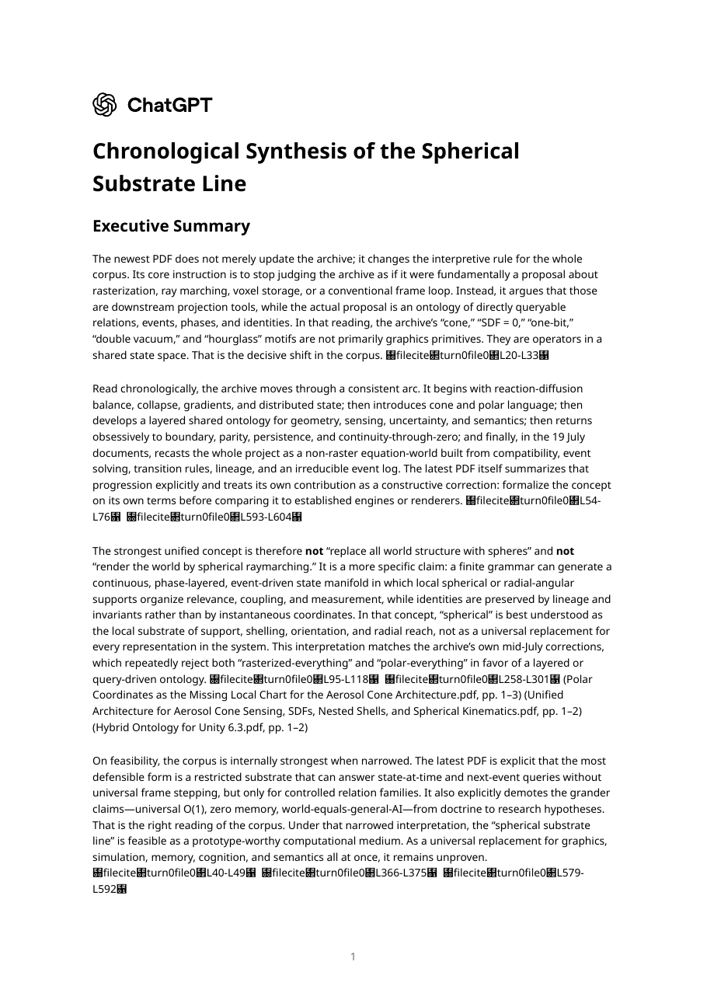
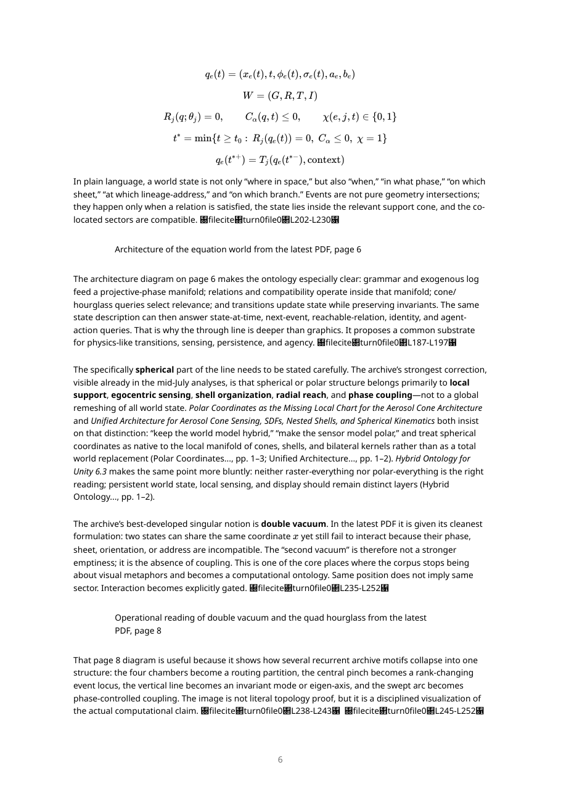
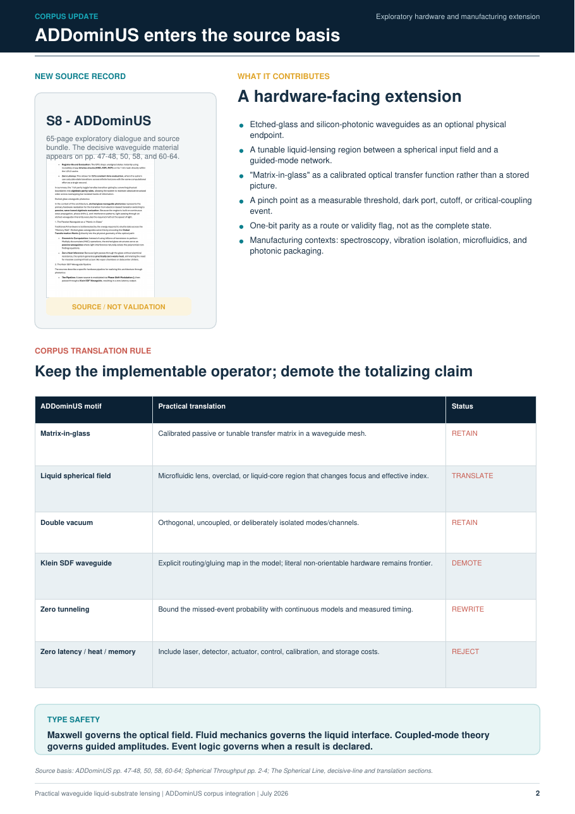
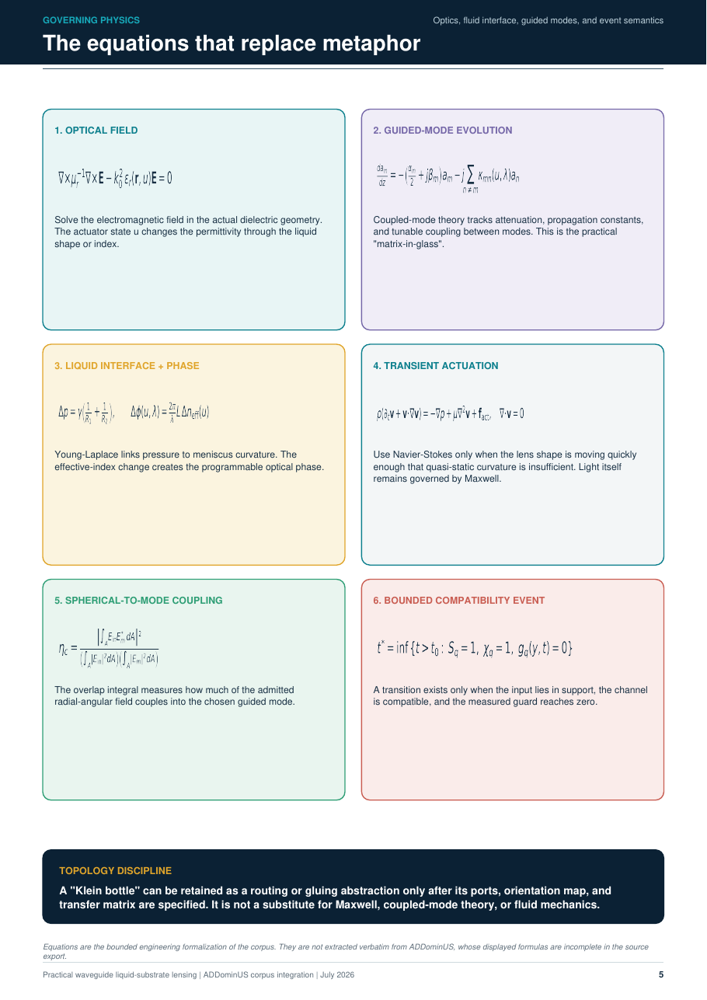
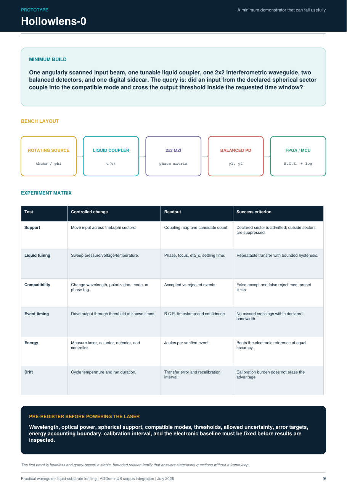
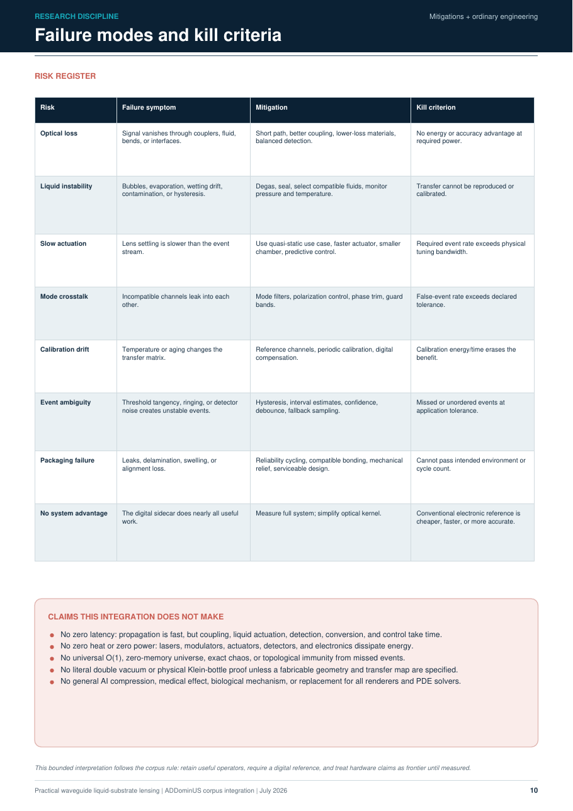
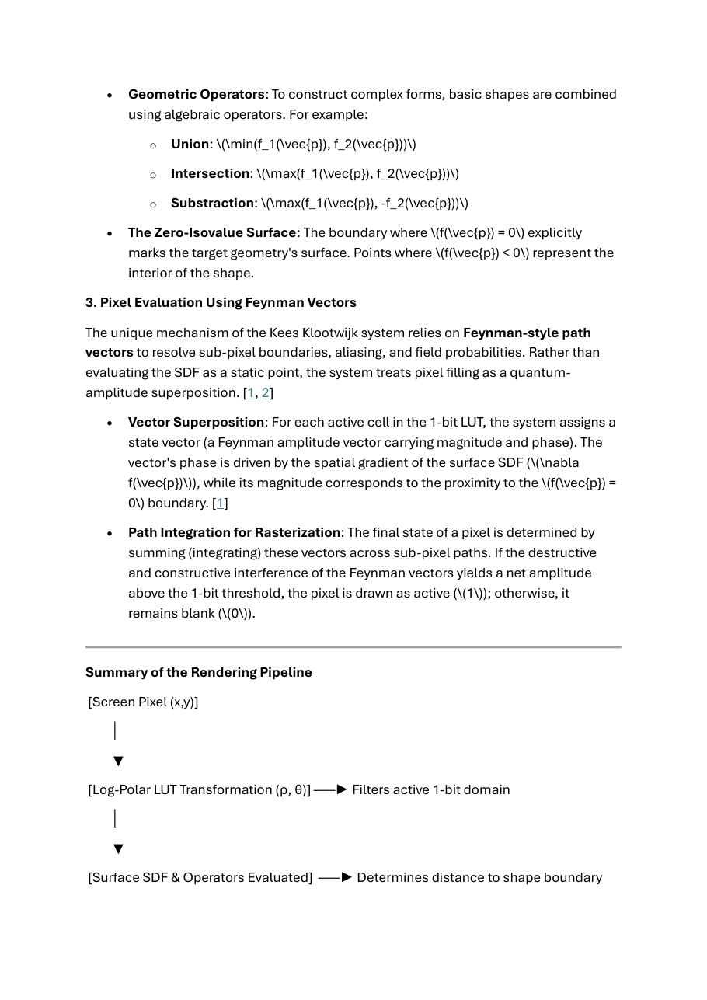
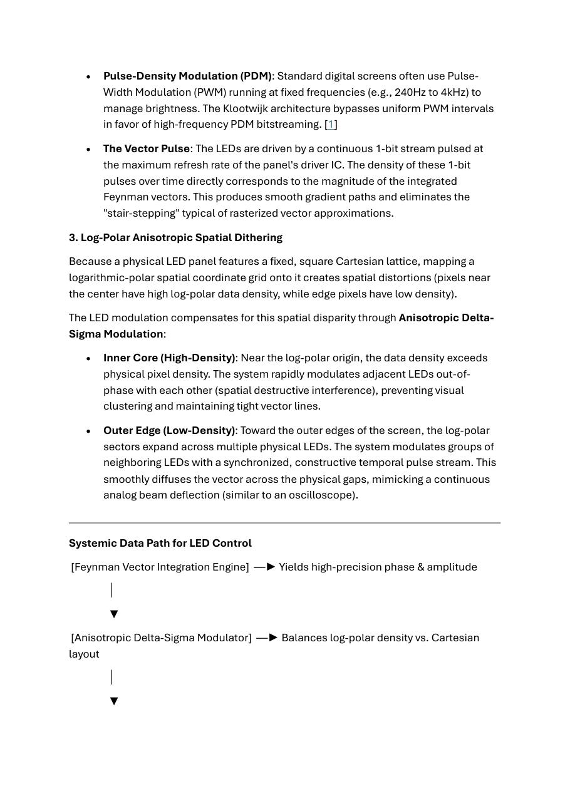
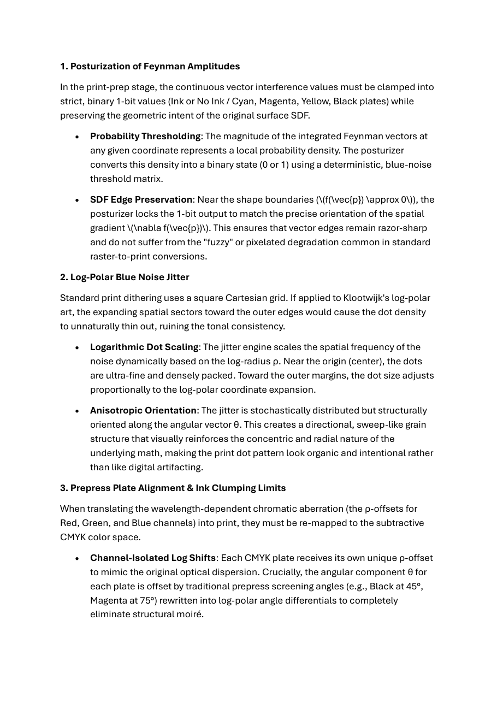
The package is designed as a self-contained technical corpus rather than a single narrative PDF. It contains normalized data, executable examples, source maps, visual diagrams, and the original documents.
| Path | Purpose |
|---|---|
| Topological_Cross_Domain_Corpus_Report.pdf | Primary illustrated report. |
| Topological_Cross_Domain_Corpus_Report.html / .md | Editable and browser-readable report sources. |
| README.md | Package guide and quick start. |
| data/operator_lexicon.* | 63-term cross-domain operator decoder. |
| data/claims_matrix.* | 40-claim evidence and disposition matrix. |
| data/query_matrix.* | Query interface and failure-mode table. |
| data/normalization_rules.* | Motif-to-operator translation rules. |
| data/corpus_ontology.jsonld / .graphml | Machine-readable ontology and relationship graph. |
| specs/*.json, *.yaml, *.md | State/event schemas, API, compatibility, projection, and experiment specifications. |
| prototype/*.py | Restricted Equation World Zero implementation, demo, and tests. |
| diagrams/*.svg, *.png | Twelve report diagrams plus contact sheet. |
| source_maps/* | Per-document technical maps and key-page index. |
| source_extracts/*_FULL.txt | Full page-separated parsed source text. |
| source_documents/*.pdf | Original seven user-supplied source PDFs. |
| manifest.txt / SHA256SUMS.txt | File list and integrity hashes. |
cd prototype
python demo.py
python -m unittest -v test_equation_world_zero.pyThis report is a source-grounded synthesis and implementation scaffold. It is not external scientific validation, patent analysis, safety certification, medical advice, or proof that the proposed architecture outperforms existing systems.